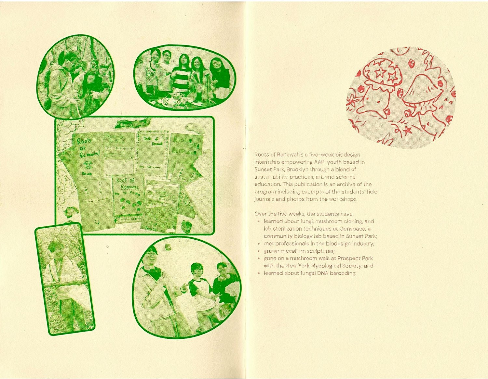
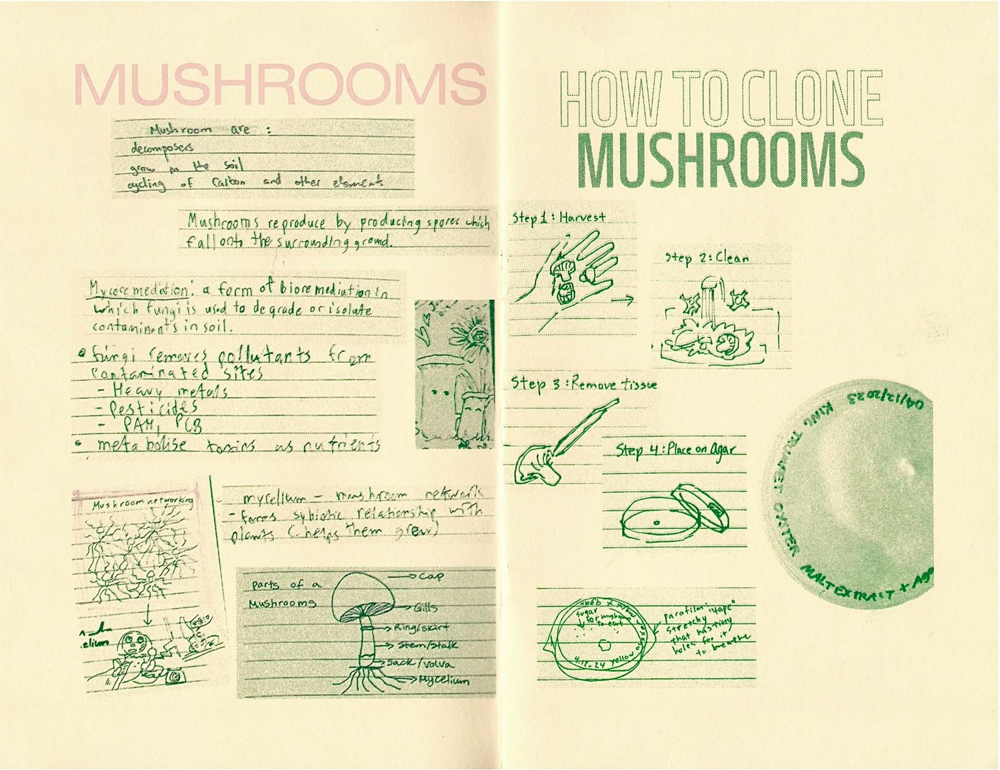
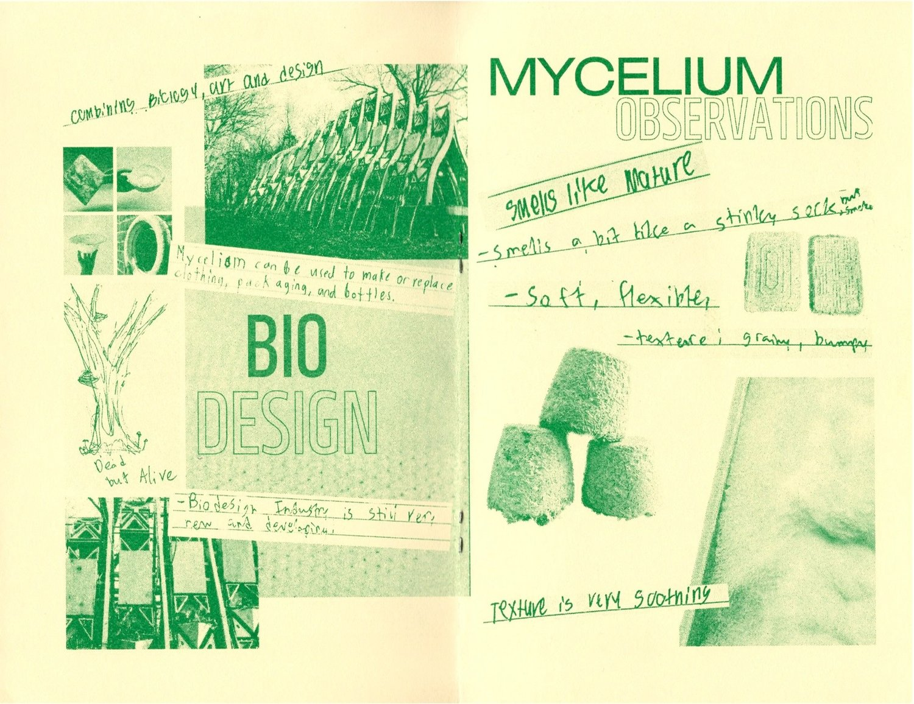
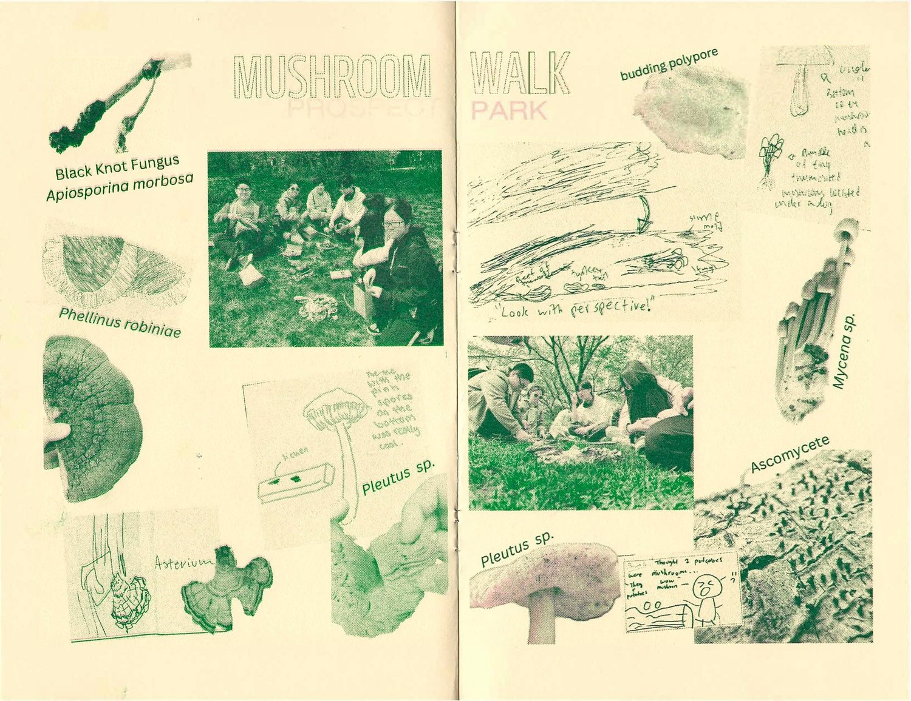
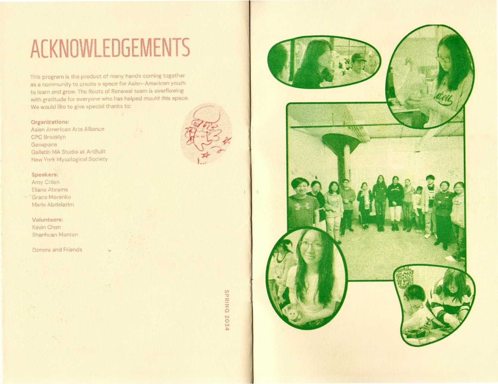
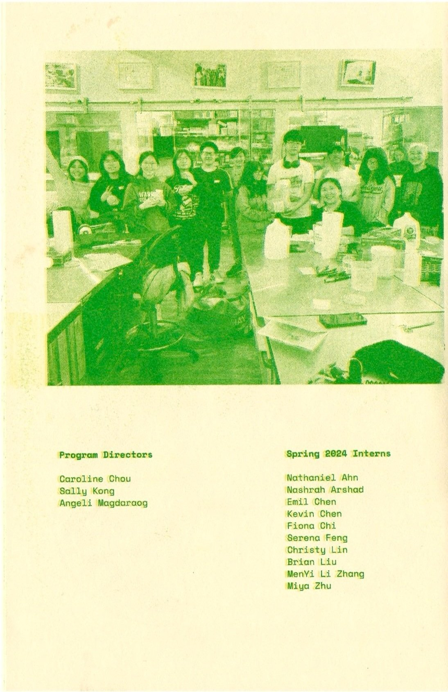

Roots of Renewal Zine
Made in collaboration with the interns from Roots of Renewal, this booklet is a collage of their field journal notes and drawings.







Made in collaboration with the interns from Roots of Renewal, this booklet is a collage of their field journal notes and drawings.





